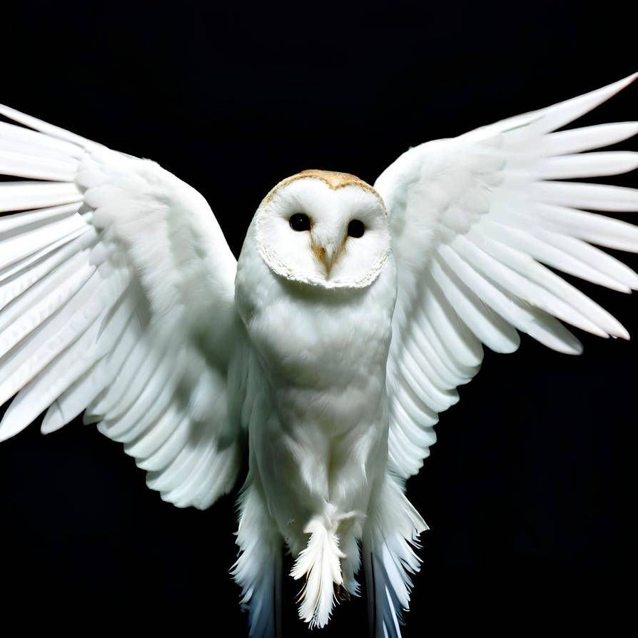
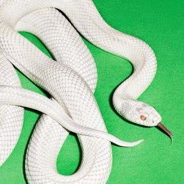
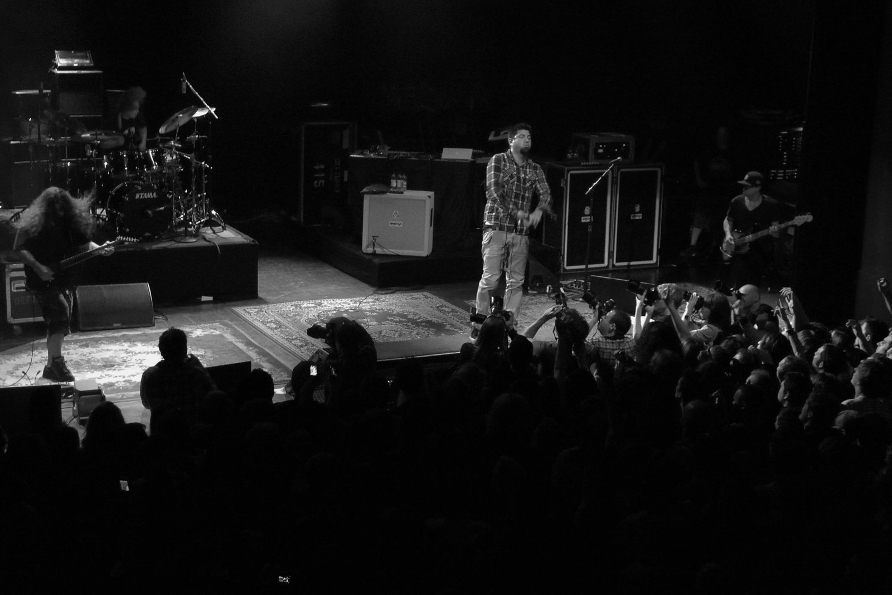

deftones

Private Music
Upcoming Dates
Dates subject to change / check official listings
01 / History
Deftones formed in Sacramento in 1988. They are often linked to alternative metal, but the genre boundaries were always too narrow: their style varies from sharp guitar attacks to weightless soundscapes.
The band formed in 1988 around Chino Moreno, Stephen Carpenter, and Abe Cunningham. Chi Cheng joined in 1990. Adrenaline and Around the Fur took Deftones beyond the local scene.

On White Pony, heaviness meets trip-hop, electronics, and dream pop. Frank Delgado, who became a full-time member in 1999, expanded the palette. Deftones and Saturday Night Wrist continued this search.
After Chi’s accident in 2008, Sergio Vega took over the bass parts. Chi passed away in 2013. In 2022, Fred Sablan joined the stage. After Ohms came Private Music — the tenth studio album.